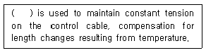
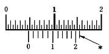
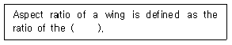
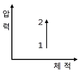

항공기관정비기능사 (2008-02-03 기출문제)
1과목: 비행원리
1. 입구의 지름이 10㎝이고, 출구의 지름이 20㎝인 원형관에 액체가 흐르고 있다. 지름 20㎝되는 단면적에서의 속도가 2.4m/s일 때 지름10㎝되는 단면적에서의 속도는 약 몇 m/s인가?
- 4.8
- 9.6
- 14.
- 19.2
(정답률: 62%)

2. 비행기의 종극속도는 어느 비행상태에서 주로 나타날 수 있는가?
- 급강하 시
- 수평비행 시
- 이륙 시
- 착륙 시
(정답률: 93%)
3. 충격파의 강도를 가장 옳게 나타낸 것은?
- 충격파 전ㆍ후의 압력 차
- 충격파 전ㆍ후의 온도 차
- 충격파 전ㆍ후의 속도 차
- 충격파 전ㆍ후의 유량 차
(정답률: 86%)
4. 일반적인 경비행기의 순항 비행에서는 발생되지 않는 항력은?
- 유도항력
- 조파항력
- 압력항력
- 마찰항력
(정답률: 87%)
5. 날개골의 공기력 중심에 있어서의 받음각에 대한 공기력 모멘트계수의 변화율은?
- 정(＋)의 값을 갖는다.
- 부(-)의 값을 갖는다.
- 거의 변화하지 않는다.
- 무한대의 값을 갖는다.
(정답률: 49%)
6. 비행기가 평형상태에서 벗어난 뒤에 다시 평형상태로 되돌아가려는 초기의 경향을 가장 옳게 설명한 것은?
- 정적 안정성이 있다. [양의 정적안정]
- 동적 안정성이 있다. [양의 동적안정]
- 정적으로 불안정하다. [음의 정적안정]
- 동적으로 불안정하다. [음의 동적안정]
(정답률: 67%)
7. 대류권에서 고도가 높아질 때 일어나는 현상에 대하여 옳게 설명한 것은?
- 압력과 밀도가 동시에 증가한다.
- 압력은 증가하고, 밀도는 감소한다.
- 압력은 감소하고, 밀도는 증가한다.
- 압력과 밀도가 동시에 감소한다.
(정답률: 57%)
8. 프로펠러 비행기의 비행속도가 98.4m/s이고프로펠러의 회전수가 1250rpm, 프로펠러 지름이 3.4m일 때 이 프로펠러의 진행률은 약 얼마인가?
- 0.98
- 1.08
- 1.39
- 2.43
(정답률: 42%)
9. 활공기가 고도 12000m 상공에서 활공을 하여 수평활공거리가 24000m를 비행하였다면, 이때 양항비(CL/CD)는 얼마인가?
- 1/10
- 10
- 1/20
- 20
(정답률: 62%)
10. 날개에서 최대 양력계수를 크게 하기 위한 장치가 아닌 것은?
- 슬롯
- 드루프 앞전
- 에어스포일러
- 크루거 플랩
(정답률: 68%)
11. 다음 중 비행기의 주조종면에 속하는 것은?
- 도움날개
- 스포일러
- 슬랫
- 플랩
(정답률: 78%)
12. 비행기가 항력을 이기고 전진하는데 필요한 마력을 무엇이라 하는가?
- 이용마력
- 여유마력
- 필요마력
- 제동마력
(정답률: 80%)
13. 헬리콥터가 전진비행을 할 때 회전날개 깃에 발생하는 양력분포의 불균형을 해결할 수 있는 방법으로 가장 옳게 설명된 것은?
- 전진하는 깃의 받음각은 감소시키고 후퇴 하는 깃의 받음각은 증가시킨다.
- 전진하는 깃의 받음각과 후퇴하는 피치각 모두를 증가시킨다.
- 전진하는 깃의 받음각과 후퇴하는 깃의 받음각 모두를 감소시킨다.
- 전진하는 깃의 받음각은 증가시키고 후퇴 하는 깃의 받음각은 감소시킨다.
(정답률: 67%)
14. 헬리콥터의 동시피치제어간을 위로 움직이면 어떤 현상이 발생하는가?
- 회전날개의 피치가 증가한다.
- 회전날개의 피치가 감소한다.
- 헬리콥터의 고도가 낮아진다.
- 회전날개의 피치가 감소하고, 고도도 하강한다.
(정답률: 68%)
15. 고속 비행기의 세로 불안정에 포함되지 않는 것은?
- 턱 언더
- 피치 업
- 디프 실속
- 날개 드롭
(정답률: 57%)
16. 다음 ( ) 안에 알맞은 용어는?

- Extension bar
- Tension regulator
- Pully
- Tension meter
(정답률: 52%)
17. 기체의 점검 중 정시점검에 해당하지 않는 것은?
- isi 점검
- C 점검
- D 점검
- E 점검
(정답률: 57%)
18. AN 310 규격번호는 어떤 너트인가?
- 고정너트
- 자동고정너트
- 캐슬너트
- 평너트
(정답률: 53%)
19. 다음 [그림]은 최소측정값이 1/50㎜인 버니어캘리퍼스의 눈금읽기 도면이다. 틀린 설명은? (단, 화살표로 표시된 * 부분은 어미자와 아들자의 눈금이 일치하는 곳이다.)

- 아들자의 0점 기선 바로 왼쪽의 어미자의 눈금을 읽는다.
- 어미자와 아들자의 눈금이 일치하는 아들자의 눈금을 읽는다.
- 측정값은 4.72㎜이다.
- 아들자의 11번째 기선 바로 위의 일치되는 어미자의 눈금을 읽는다.
(정답률: 48%)
20. 힌지핸들에 대한 설명으로 가장 옳은 것은?
- 부품수가 많은 볼트나 너트를 신속하게 풀 때 사용한다.
- 단단하게 조여져 있는 볼트나 너트를 풀 때 사용한다.
- 협소한 공간에서 소켓을 이용하여 볼트나 너트를 풀 때 사용한다.
- 협소한 공간에서 라쳇을 이용하여 볼트나 너트를 신속하게 풀 때 사용한다.
(정답률: 51%)
2과목: 항공기정비
21. 자력선을 이용하여 재료표면이나 표면 바로 밑의 균열을 발견하는 비파괴검사 방법은?
- 자분탐상검사
- 형광침투검사
- 초음파탐상검사
- 방사선투과검사
(정답률: 85%)
22. 다음 중 턴버클이 주로 사용되는 것은?
- 케이블
- 튜브
- 호스
- 판재
(정답률: 83%)
23. 항공기에 이용되는 고압가스 중 히드라진의 주된 용도는?
- 항공기의 화재 시 소화제로 사용
- 항공기가 고공비행 중 산소가 없을 때 산 소대용으로 사용
- 항공기 조종계통의 작동을 위한 비상동력 원으로 사용
- 항공기의 독극물 취급 시 중화시키는 해독제로 사용
(정답률: 66%)
24. 인화성 액체에 의한 화재의 종류는?
- A급 화재
- B급 화재
- C급 화재
- D급 화재
(정답률: 82%)
25. 지상안전의 필요사항으로 작업자가 취해야 할 안전사항으로 적절하지 않은 것은?
- 작업자는 작업 시 반드시 규정과 절차를 준수해야 한다.
- 작업 시 보호장구가 필요할 때에는 반드시 보호장구를 착용해야 한다.
- 작업장 및 주위 환경보다는 자기가 하고 있는 작업에만 몰두한다.
- 작업장의 상태를 청결히 하고 정리, 정돈 하여 사고의 잠재 요인을 제거하도록 노력한다.
(정답률: 94%)
26. 다음 ( ) 안에 알맞은 내용은?

- wing span to the wing root
- square of the chord to the wing span
- wing span to the mean chord
- wing span to the wing span
(정답률: 60%)
27. 충돌, 추락, 전복 및 사고의 위험이 있는 장비 및 시설물 등에 대하여 주의를 표시하기 위한 색은?
- 빨간색
- 노란색
- 녹색
- 파란색
(정답률: 74%)
28. 항공기 기체를 강풍이나 돌풍으로부터 보호하기 위한 작업을 무슨 작업이라고 하는가?
- 항공기 계류작업
- 항공기 견인작업
- 항공기 유도작업
- 항공기 고정작업
(정답률: 83%)
29. 토크렌치에 사용자가 원하는 토크값을 미리 지정시킨 후 볼트를 죄면 정해진 토크값에서 소리가 나는 토크렌치의 종류는?
- 디플렉팅 - 빔형
- 오디블 인디케이팅형
- 리지드 프레임형
- 토션 바형
(정답률: 80%)
30. 항공기의 정비사항 중 대수리 작업에 해당하지 않는 것은?
- 예비품 검사대상 부품의 오버홀
- 기체의 일부 또는 전체의 오버홀
- 내부 부품의 복잡한 분해 작업
- 기관이나 장비의 그 성능이나 구조의 변경
(정답률: 50%)
31. 부식 환경에서 금속에 가해지는 반복 응력에 의한 부식이며, 반복 응력이 작용하는 부분의 움푹 파인 곳의 바닥에서부터 시작되는 부식은?
- 점 부식
- 입자간 부식
- 찰과 부식
- 피로 부식
(정답률: 85%)
32. 항공기 검사방법 중 보어스코프검사가 주로 사용되는 곳은?
- 착륙장치
- 기관
- 조종면
- 계기
(정답률: 81%)
33. 항공기용 기계요소 중 조종계통의 조종변위를 전달하는 역할을 하는 것은?
- 케이블
- 볼트
- 리벳
- 너트커플링
(정답률: 88%)
34. 복합소재의 수리 작업 시 압력을 가하는데 가장 효과적인 방법은?
- 숏백
- 클레코
- 진공백
- 스프링 클램프
(정답률: 54%)
35. 항공기에 장착된 상태로 계통 및 구성품이 규정된 지시대로 정상기능을 발휘하고, 허용한계값 내에 있는가를 점검하는 것을 무엇이라고 하는가?
- 트림점검
- 기능점검
- 벤치체크
- 오버홀
(정답률: 68%)
36. 기관을 시동하기 전에 주의해야 할 사항으로틀린 것은?
- 기관 전방에 설치했던 안전표지판 등을 제거한다.
- 지상요원을 항공기 주변에 적절히 배치한 다.
- 기관의 흡입구 주변에 장애물이 있는지 확인한 후 제거한다.
- 정비작업에 사용된 공구는 정상시동을 확 인한 후 제거한다.
(정답률: 55%)
37. 일정시간 작동된 기관에서 윤활유를 채취하여 윤활유에 함유되어 있는 금속성분을 분석하여 내부 부분품의 마모, 손상여부를 판독하는 방법은?
- 윤활유 필터링 검사
- 윤활유 분광시험
- 윤활유 솔더링 시험
- 윤활유 와전류 검사
(정답률: 57%)
38. 흡입밸브가 열리는 시기를 상사점 전 10~25°로 하는 가장 주된 이유는?
- 배기가스가 안으로 들어오는 배출 관성 을 이용하여 출력 효과를 높이기 위하여
- 배기가스가 밖으로 나가는 배출관성을 이용하여 혼합비를 낮추기 위하여
- 배기가스가 밖으로 나가는 배출관성을 이용하여 흡입효과를 높이기 위하여
- 배기가스가 밖으로 나가는 배출관성을 이용하여 배기효과를 높이기 위하여
(정답률: 61%)
39. 연료조절장치(FCU)의 기본 구성요소로 가장 거리가 먼 것은?
- Computing section
- Fuel section
- Metering section
- Sensing section
(정답률: 43%)
40. O-470-E1 왕복기관에서 맨 앞의 “O"는 무엇을 의미 하는가?
- 기관의 실린더 배열형식
- 연료계통에서 기화기의 형식
- 실린더의 모양
- 점화계통의 형식
(정답률: 52%)
3과목: 항공기관
41. 왕복기관에서 피스톤 링의 역할이 아닌 것은?
- 실린더 벽에 윤활유를 공급한다.
- 피스톤의 열을 실린더에 전달한다.
- 가스의 누설을 방지한다.
- 피스톤에 작용하는 압력을 커넥팅로드에 전달한다.
(정답률: 49%)
42. 가스터빈기관의 윤활유 계통에서 냉각기가 윤활유 탱크로 향하는 배유라인 쪽에 위치한 것을 어떤 타입이라고 하는가?
- 냉형
- 열형
- 오일-공기형
- 연료-오일형
(정답률: 50%)
43. 가스터빈 기관의 연료노즐 중 복식노즐에 대한 설명으로 가장 옳은 것은?
- 1차 연료는 시동이 이루어진 후 아이들 회전속도 이하에서만 비교적 넓은 각도로 분사한다.
- 1차 연료는 시동 시 연료 분사각도를 비교 적 좁게 하여 멀리 가게 한다.
- 2차 연료는 저속회전 작동 시 연소실 벽에 직접 연료가 닿게 분사한다.
- 2차 연료는 고속 회전 작동 시 연소실 벽 에 닿지 않게 비교적 좁은 각도로 멀리 분사한다.
(정답률: 38%)
44. 이륙이나 상승할 때와 같이 최대출력을 낼 때 카울플랩은 어떻게 하는 것이 가장 좋은가?
- 1/3정도 열어준다.
- 2/3정도 열어준다.
- 완전히 열어준다.
- 완전히 닫아준다.
(정답률: 59%)
45. 항공용 왕복기관에 사용되는 계기가 아닌 것은?
- 실린더 헤드 온도계
- N1 회전계
- 연료압력계
- 윤활유온도계
(정답률: 67%)
46. 다음 중 대형기관에 가장 적당한 시동계통은?
- 전동기식
- 발전기식
- 시동-발전기식
- 공기터빈식
(정답률: 49%)
47. 다음 중 일의 정의를 가장 옳게 나타낸 것은?
- 힘×거리
- 질량×거리
- 힘×속도
- 무게×속도
(정답률: 67%)
48. 가스터빈 기관의 소음에 대한 설명 중 틀린 것은?
- 소음의 원인은 주로 배기소음이다.
- 소음의 크기는 배기가스 속도의 6~8제곱 에 비례한다.
- 배기소음은 주로 고주파음으로 되어 있다
- 소음은 배기노즐 지름의 제곱에 비례한다.
(정답률: 52%)
49. 다음 [그림]에서 과정 1 → 2를 무엇이라 하는가?

- 정적과정
- 정압과정
- 등온과정
- 단열과정
(정답률: 54%)
50. 터보제트 엔진에서 추진효율을 높이는 가장 유효한 방법은?
- 유입공기량 증대, 배기속도 억제
- 유입공기량 감소, 배기속도 억제
- 유입공기량 감소, 배기속도 증대
- 유입공기량 증대, 배기속도 증대
(정답률: 27%)
51. 가스터빈기관에 사용되는 원심식 압축기의 주요 구성품이 아닌 것은?
- 디퓨져
- 임펠러
- 매니폴드
- 회전자
(정답률: 78%)
52. 프로펠러에서 유효피치에 대한 설명으로 옳은 것은?
- 프로펠러 회전 속도에 대한 항공기의 전 진속도의 비율이다.
- 비행 중 프로펠러가 60회전하는 동안 항공기가 이론상 전진한 거리이다.
- 비행 중 프로펠러가 1회전하는 동안 증가 된 항공기의 속도이다.
- 비행 중 프로펠러가 1회전하는 동안에 항공기가 전진한 실제 거리이다.
(정답률: 84%)
53. 왕복기관에서 밸브간극에 대하여 가장 옳게 설명한 것은?
- 밸브시트와 캠 로브 사이에 조금의 여유를 두는 것이다.
- 푸시로드와 캠 사이에 조금의 여유를 두는 것이다.
- 유압밸브리프트와 로커암사이에 조금의 여유를 두는 것이다.
- 로커암과 밸브스템사이에 조금의 여유를 두는 것이다.
(정답률: 40%)
54. 왕복기관의 실린더 내에서 피스톤이 이동한 거리를 무엇이라고 하는가?
- 보어
- 행정
- 사이클
- 배기량
(정답률: 57%)
55. 다음 중 추력 증가에 이용되는 장치로만 구성되어 있는 것은?
- 후기연소기, 물분사장치
- 후기연소기, 역추력장치
- 역추력장치, 물분사장치
- 후기연소기, 소음장치
(정답률: 82%)
56. 가스터빈기관의 터빈 블레이드에 장시간 열하중과 원심하중이 부여되기 때문에 발생하는 변형을 무엇이라고 하는가?
- 헤어크랙
- 열점
- 핫 스트리크
- 크리프
(정답률: 54%)
57. 압력분사식 기화기에서 챔버 A와 B 사이에 막이 파손되었다면, 어떤 현상이 나타날 수 있겠는가?
- 연료는 계속 공급될 것이다.
- 연료가 차단될 것이다.
- 연료의 압력이 증가할 것이다.
- 연료의 흐름이 증가할 것이다.
(정답률: 59%)
58. 저압 점화계통에서 마그네토의 구성품이 아닌 것은?
- 1차 코일
- 2차 코일
- 브레이커 포인트
- 콘덴서
(정답률: 48%)
59. 관속에서 공기의 맥동효과를 이용하여 공기를 압축하는 기관은?
- 램제트기관
- 펄스제트기관
- 터보제트기관
- 터보프롭기관
(정답률: 60%)
60. 4행정기관에서 크랭크축이 4회전하는 동안에 몇 번의 폭발이 일어나는가?
- 1
- 2
- 3
- 4
(정답률: 61%)
2.4m/s ÷ 4 = 0.6m/s
하지만, 문제에서 속도의 단위로 m/s가 아닌 약속된 단위인 "약 몇 m/s"가 사용되었으므로, 0.6m/s를 10으로 곱한 후 반올림하여 정답을 구한다.
0.6m/s × 10 ≈ 6 ≈ 9.6
따라서, 정답은 9.6이다.